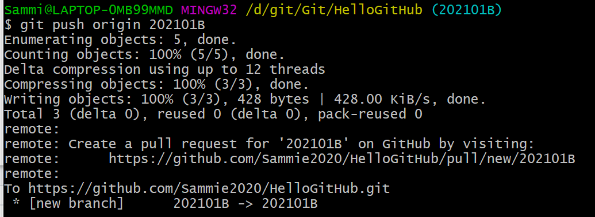

克隆远端仓库代码
git clone https://github.com/Sammie2020/HelloGitHub.git
进去HelloGitHub(项目名)目录，配置开发者用户名和邮箱，请用真实的邮箱地址
git config user.name Sammie2020
git config user.email Sammie2020@qqqq.com
添加月份分支
git branch 202101V
修改分支名称
git branch -m 202101V 202101B
查看分支(只显示本地分支)
git branch
查看所有分支
git branch -av
删除分支
git branch -d 202102B
切换分支
git checkout 202101B
查看文件变更状态
git status
添加变更文件到暂存区
git add README.md
添加所有变更文件到暂存区
git add .
添加后用git status查看文件当前状态
提交文件变更到版本库
git commit - m 'modify readme.md (这里写提交的原因)'
添加后不想提交
git reset
将本地代码推送到服务器
git push origin 202101B
origin 当前git的服务器地址

远程分支已删除，但是本地仓库git branch -av 查看的时候还是显示，查看远程分支状态
git remote show origin
删除远程分支已被删除的分支
git remote prune origin
拉取服务器最新的代码到本地
git pull origin 202101B
如果服务器代码做了变动，而你本地的代码也有变动，拉取的代码就有可能会跟你本地的改动冲突，一般情况下 Git 会自动处理这种冲突合并，但如果改动的是同一行，那就需要手动来合并代码，编辑文件，保存最新的改动，再通过 git add . 和 git commit -m 'XXX' 来提交合并。
查看版本提交记录（提交人/日期/提交原因）
git log
提交记录过多可以按J下翻，k上翻，Q退出查看
设置哪些内容不需要推送到服务器，这是一个配置文件
.gitignore
为项目标记里程碑
git tag origin SimpleUseOfGit
以上为git的简单使用总结